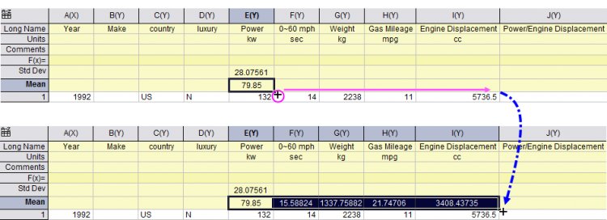

Spalten-/Zellenwerte festlegen
SetColVal
Zusammenfassung
Origin bietet mehrere Möglichkeiten, eine Spalte oder Matrix mit Werten zu berechnen. Eines der leistungsstärksten Funktionen in Origin ist Spaltenwerte festlegen, ein Hilfsmittel zum Durchführen von mathematischen Operationen, im Allgemeinen für Werte, die in einer Arbeitsmappe oder Matrix gespeichert sind. Diese Operationen können Origins Standardfunktionen, benutzerdefinierte Origin-C-Funktionen, Python-Funktionen, mathematische und logische Operatoren, Standard- oder benutzerdefinierte Variablen einsetzen und sogar die Vorverarbeitung von Eingabedaten zulassen.
Dieses Tutorial zeigt Ihnen, wie Sie Zellen- oder Spaltenwerte berechnen, indem Sie:
- eine Spalte mit einer arithmetischen Reihe füllen,
- Standardfunktionen verwenden,
- andere Wertespalten verwenden,
- Zellenwerte verwenden
- Variablen aus den Metadaten der Arbeitsmappe verwenden.
Außerdem lernen Sie:
- wie eine Formel zum Berechnen von Zellenwerten in eine Arbeitsblattzelle eingegeben wird,
- automatische Verhaltensweisen zum Festlegen von Zellenwerten,
wie Spaltenwerte festgelegt werden,
wie eine Spalte mit einer arithmetischen Reihe gefüllt wird.
Origin bietet mehrere Methoden zum Füllen einer Spalte mit arithmetischen Reihen.
Automatisches Füllen verwenden
- Geben Sie einige Startwerte in die Zellen ein.
- Markieren Sie zwei Zellen.
- Bewegen Sie die Maus in die untere rechte Ecke der zweiten Zelle. Der Cursor verwandelt sich in ein "+".
- Ziehen Sie die Maus zum unteren Ende der Spalte. Die Spalte wird mit 1, 3, 5, 7, ... gefüllt.
 | Beachten Sie, dass eine Zeile auch automatisch durch Ziehen nach rechts gefüllt werden kann. Drücken Sie zusätzlich, um eine Abfolge der Zellenwerte in Zellen einer anderen Spalte oder Zeile zu kopieren, die SHIFT-Taste, während die gewünschte Sequenz ausgewählt ist, und drücken Sie dann Strg und ziehen am Cursor. |
Option Mit einer Reihe von Zahlen füllen verwenden
- Klicken Sie mit der rechten Maustaste auf Spalte B und wählen Sie Spalte füllen mit: Eine Reihe von Zahlen im Kontextmenü, um den Dialog PatternN aufzurufen.
- Geben Sie 1 im Bearbeitungsfeld Von und 23 im Bearbeitungsfeld Bis ein. Geben Sie im Bearbeitungsfeld Inkrement 2 ein.
-
- Nachdem Sie auf die Schaltfläche OK geklickt haben, wird Spalte B mit Werten gefüllt: 1, 3, 5, 7, ...., 23.
Andere Spalten verwenden
Wir zeigen Ihnen, wie Sie Ausdrücke in die Zeile F(x) eingeben, um Spaltenwerte festzulegen.
- Öffnen Sie eine neue Arbeitsmappe. Importieren Sie die Datei US Metropolitan Area Population.dat aus dem Ordner \Samples\Data Manipulation\.
- Fügen Sie dem Arbeitsblatt eine neue Spalte hinzu (klicken Sie mit der rechten Maustaste rechts neben die letzte Spalte im Arbeitsblatt und wählen Sie Neue Spalte im Kontextmenü). Ändern Sie den Langnamen der Spalte in Population/Sq. Mi.
- Um die Dichte der Bevölkerung (Population) zu berechnen, geben Sie den Ausdruck A/B in der Zeile F(x) der Spalte E ein.
- Die Spalte wird mit Daten aus den beiden anderen Spalten berechnet.
Standardfunktionen verwenden
- Öffnen Sie eine neue Arbeitsmappe. Importieren Sie Step Signal with Random Noise.dat im Ordner \Samples\Signal Processing\. Sie werden den gleitenden Durchschnitt von Spalte B berechnen, das heißt, Sie berechnen den Wert des gleitenden Durchschnitts bei jedem Punkt von Spalte B.
- Klicken Sie auf die Schaltfläche Neue Spalte hinzufügen
 auf der Symbolleiste Standard, um eine neue Spalte C hinzuzufügen. Markieren Sie diese Spalte, klicken Sie mit der rechten Maustaste und wählen Sie Spaltenwerte errechnen im Kontextmenü aus, um den Dialog Werte setzen zu öffnen.
auf der Symbolleiste Standard, um eine neue Spalte C hinzuzufügen. Markieren Sie diese Spalte, klicken Sie mit der rechten Maustaste und wählen Sie Spaltenwerte errechnen im Kontextmenü aus, um den Dialog Werte setzen zu öffnen.
- Klicken Sie im Dialog Werte setzen auf die Schaltfläche Suchen und Einfügen
 , um nach dem Stichwort adjacent average zu suchen.
, um nach dem Stichwort adjacent average zu suchen.
- Klicken Sie doppelt auf den Funktionsnamen Movavg(vd,back,forward), um die Funktion in den Dialog einzufügen und den Dialog zu schließen.
- Markieren Sie die Zeichen vd. Ersetzen Sie vd mit B, ersetzen Sie back mit 0 und ersetzen Sie forward mit 2. Ihre Formel sollte folgendermaßen aussehen:

- Klicken Sie auf OK. Die letzte Spalte wird mit dem gleitenden Durchschnitt aus Spalte B gefüllt.
| Wenn Sie auf eine andere Spalte im gleichen Arbeitsblatt verweisen, können Sie Index (z. B. "col(1)"), Kurzname (z. B. "A" oder "col(A)") oder Langname (z. B. "signal with noise") verwenden, um die Spalte zu identifizieren. |
Spalten aus anderen Blättern verwenden
Der Dialog Werte setzen enthält ein Menü Variablen, mit dem Bereichsvariablen leicht eingefügt werden können, die auf Spalten in anderen Mappen/Blättern verweisen und dann verwendet werden können, um Spaltenwerte der aktuellen Spalte zu berechnen.
- Öffnen Sie das Projekt Samples\Data Manipulation\Setting Column Values.OPJ und klicken Sie auf den Unterordner Columns from Other Sheets.
- Klicken Sie in der Arbeitsmappe mit der rechten Maustaste auf die Registerkarte Sample und wählen Sie Duplizieren ohne Daten. Benennen Sie (durch Doppelklick auf den aktuellen Namen) das neue Blatt um: Korrigiertes Sample.
- Jetzt füllen Sie diese drei Spalten mit Daten, basierend auf Formeln, die auf Spalten in anderen Blättern verweisen. Markieren Sie die erste Spalte, klicken Sie mit der rechten Maustaste auf sie und wählen Sie Spaltenwerte errechnen, um den Dialog zu öffnen. Wählen Sie Variablen: Bereichsvariable durch Auswahl einfügen, um den Dialog Aus Arbeitsblatt wählen zu öffnen. Mit diesem Dialog können Sie eine Spalte im Arbeitsblatt auswählen und diese als Bereichsvariable in das Bedienfeld Skript vor Anwenden der Formel einfügen.
- Wenn der Dialog Aus Arbeitsblatt auswählen geöffnet ist, aktivieren Sie das Blatt Sample, markieren Spalte A und klicken auf die Schaltfläche , um die Auswahl zu bestätigen. Klicken Sie im aufgerufenen Dialog Einfügungsmodus auf OK (übernehmen Sie Spaltennotation).
- Der Bereich "range r1 = Sample!Col(A);" wird automatisch in das Feld Skript vor Anwenden der Formel eingefügt. Bearbeiten Sie die Formel folgendermaßen:
range rTime = Sample!Col(A);
- Geben Sie dann rTime in die Spaltenformel ein und klicken Sie auf die Schaltfläche OK, um Daten für die erste Spalte zu erzeugen, und schließen Sie den Dialog.
- Markieren Sie im Arbeitsblatt Korrigiertes Sample die Spalte B und Spalte C und klicken Sie mit der rechten Maustaste auf sie. Wählen Sie im Kontextmenü Werte für mehrere Spalten festlegen, um den Dialog zu öffnen. Wählen Sie Variablen: Bereichsvariable nach Auswahl hinzufügen und fügen Sie nacheinander zwei Bereichsvariablen in das Bedienfeld Skript vor Anwenden der Formel ein, indem Sie die vorhergehenden Schritte befolgen. Bearbeiten Sie diese neuen Einträge folgendermaßen:
range rSample = Sample!Col(B);
and
range rRef = Reference!Col(B);
- Jetzt bearbeiten wir die Bereichsvariablen im Feld Skript vor Anwenden der Formel und verwenden einen anderen Ausdruck, um die gleichen Ergebnisse zu erhalten. Entfernen Sie die Spaltennamen Col(B) der zwei Bereichsvariablen und wählen Sie Variablen: Vordefinierte Variablen: wcol(j) in beiden Zeilen, so dass es folgendermaßen aussieht:
range rSample = Sample!wcol(j);
range rRef = Reference!wcol(j);
- Geben Sie dann den folgenden Ausdruck in die Spaltenformel ein:
rSample - (rSample[1] - rRef[1])
- Klicken Sie auf die Schaltfläche OK, um Daten für die Spalte B und C des Arbeitsblatts Korrigiertes Sample zu erzeugen.
| - Sie verweisen mit eckigen Klammern auf einen bestimmten Zellenwert, d.h., [1] im Ausdruck der Spaltenformel oben bezieht sich auf das erste Element.
- Sie können Formel: Speichern und Formel: Laden im Dialog Werte setzen auswählen, um Ihre Formeln zu speichern und sie in anderen Spalten neu zu lassen, so dass neue Daten erzeugt werden.
|
Zellenwerte verwenden
Es kann auf Werte in speziellen Arbeitsblattzellen verwiesen werden. Diese Werte werden dazu verwendet, um die Formel zum Festlegen der Spaltenwerte zu berechnen. Auf diese Weise können Arbeitsblattzellen ganz einfach zum Aktualisieren der Werte in einer Spalte verwendet werden.
- Öffnen Sie das Projekt Samples\Data Manipulation\Setting Column Values.OPJ und wechseln Sie im Projekt Explorer zum Unterordner Cells in a Worksheet.
- Klicken Sie mit der rechten Maustaste auf Spalte C und wählen Sie im Kontextmenü Spaltenwerte errechnen, um den Dialog Werte setzen aufzurufen.
- Verwenden Sie das Menü Variablen: Bereichsvariable nach Auswahl hinzufügen, um den Dialog Aus Arbeitsblatt auswählen zu öffnen. Wählen Sie dann Spalte G(Value) in diesem Arbeitsblatt und klicken Sie auf .
Klicken Sie auf OK, wenn der Dialog Einfügungsmodus angezeigt wird, (übernehmen Sie die Spaltennotation), um seinen Ausdruck in das Feld Skript vor Anwenden der Formel einzufügen.
- Ändern Sie im Feld Skript vor Anwenden der Formel den Namen der Bereichsvariablen in rControl und fügen Sie diese zusätzlichen Zeilen hinzu, so dass das Skript folgendermaßen aussieht:
range rControl = Col(G); //range r1 = Col(7); int nOrder = rControl[2]; int nPoints = rControl[3]; differentiate -se iy:=(1,2) order:=1 smooth:=1 poly:=nOrder npts:=nPoints oy:=(1,3);
Das Skript ruft die X-Funktion differentiate auf und gibt die Zellwerte aus Spalte G als Argumente für die polynomiale Ordnung und die Anzahl der Punkte weiter. Das steuert die Savitzky-Golay-Glättung, die während der Differenziation durchgeführt wird.
- Der Dialog Werte setzen sollte dann folgendermaßen aussehen:

- Klicken Sie auf OK, um den Dialog zu schließen. Die Ergebnisse befinden sich in Spalte C. Sie können jetzt versuchen, die Werte in Spalte G zu ändern, um die Ausgabe zu ändern.
Hinweis: Zugelassene Werte der polynomialen Ordnung sind 1 bis 9.
| Das im Arbeitsblatt gezeigte Diagramm wurde zuerst erstellt und dann in das Arbeitsblatt eingebettet, indem eine Gruppe von Zellen zusammengefügt wurde. |
Variablen aus den Metadaten der Arbeitsmappe verwenden
Auf in der Arbeitsmappe gespeicherte Metadaten wie Variablen, die beim Importieren von Daten mit dem Importassistenten gespeichert wurden, kann verwiesen und sie können zum Berechnen von Spaltenwerten verwendet werden.
- Öffnen oder fahren Sie mit der Bearbeitung des Projekts \Samples\Data Manipulation\Setting Column Values.OPJ fort und wechseln Sie zu dem Unterordner Worksheet Metadata im Fenster des Projekt Explorers.
- Markieren Sie Spalte A und klicken Sie mit der rechten Maustaste, um die Menüoption Einfügen auszuwählen. Links von Spalte A wird eine neue Spalte eingefügt.
- Wählen Sie die erste Spalte (diese neu eingefügte Spalte) und klicken Sie mit der rechten Maustaste auf sie. Wählen Sie dann Spaltenwerte errechnen, um den Dialog Werte setzen zu öffnen.
- Wählen Sie im Menü Variablen: Infovariable hinzufügen, um den Dialog Variablen einfügen zu öffnen. Wählen Sie Numeric int aus der Auswahlliste Variablentyp. Erweitern Sie den Knoten USER.VARIABLES und markieren Sie die Zeile NUMBEROFPOINTS mit dem Wert 3800. Klicken Sie auf Einfügen, um diese Variable in das Feld Skript vor Anwenden der Formel einzufügen.
- Setzen Sie als Nächstes den Variablentyp auf Numeric double. Halten Sie die Shift-Taste gedrückt, um StartFrequencyKHz und StepFrequencyKHz auszuwählen, und drücken Sie dann Einfügen, um zwei Variablen einzufügen. Klicken Sie dann auf die Schaltfläche Schließen, um den Dialog zu schließen.
- Geben Sie im oberen Feld der Spaltenformel {d1:d2:d1+(n1-1)*d2} ein und klicken Sie auf OK, um Daten zu erzeugen und den Dialog zu schließen. Die Spalte wird mit Frequenzwerten gefüllt.
- Markieren Sie die erste und zweite Spalte, klicken Sie mit der rechten Maustaste auf sie und wählen Sie Setzen als: XYY, um die Zuordnungen zum Zeichnen für X und Y zu ändern. Nachdem Sie den Langnamen der ersten Spalte in Frequenz umbenannt haben, sollte das Arbeitsblatt folgendermaßen aussehen:
Zellenwerte festlegen
Im Zellenbearbeitungsmodus können Sie eine Zellenformel in eine Zelle eingeben, beginnend mit einem Gleichheitszeichen "=" (Datenzelle oder Zelle der benutzerdefinierten Parameterzeile ), wie unten zu sehen.

Sobald die Formel eingegeben wurde, verlassen Sie den Editiermodus (direkte Bearbeitung oder Bearbeiten: Editiermodus), um den resultierenden Zellwert zu sehen.
An einem Beispiel soll gezeigt werden, wie mit Zellenformeln in Origin gearbeitet wird:
- Öffnen Sie eine neue Arbeitsmappe in Ihrem Origin-Projekt.
- Importieren Sie die Beispieldaten "automobile2.dat" aus dem Ordner <Origin-Verzeichnis>Samples\Statistics in die Arbeitsmappe.
- Klicken Sie mit der rechten Maustaste auf die Headerzelle der Spaltenbeschriftungszeile "F(x)=" und wählen Sie Anwenderparameter hinzufügen im Kontextmenü, um einen Anwenderparameter hinzuzufügen.
- Fügen Sie zwei Anwenderparameter hinzu und geben Sie separat Mittelwert und StdAbw als ihre Parameternamen ein. Fügen Sie dann eine Spalte am Ende dieses Arbeitsblatts hinzu und geben Sie Power/Engine Displacement als Langname der Spalte ein.
- Wählen Sie Bearbeiten: Editiermodus, um in den Editiermodus zu wechseln. Geben Sie dann in die Zellen Mittelwert und StdAbw der Col("Power") =mean(this) bzw. =stddev(this) ein. Sobald die Bearbeitung beendet ist, klicken Sie außerhalb der Zelle, um den Bearbeitungsmodus der Zelle zu verlassen. Wählen Sie erneut im Menü Bearbeiten: Editiermodus, um die Ergebnisse der Zellenformel anzuzeigen.
| Hinweis: Um mehr über die Bedeutung der Variable "This" zu erfahren, lesen Sie bitte diese Seite. |
- Klicken Sie auf die Zelle Mittelwert der Col("Power"), um sie auszuwählen, und führen Sie den Cursor in die untere rechte Ecke dieser Zelle. Wenn der Cursor sich in ein Plus + verwandelt, klicken Sie und halten Sie dieses Bedienelement "+" fest. Ziehen Sie Ihre Maus horizontal zur Spalte Col("Engine Displacement"). Lassen Sie den Cursor los. Sie werden sehen, dass die anderen Zellen dieser Zeile mit einigen Ergebniswerten gefüllt sind. Alternativ können Sie einfach doppelt auf das "+" klicken und die Formel in alle Mittelwert-Zeilenzellen rechts von Col("Power") kopieren.

- Klicken Sie doppelt auf diese Mittelwertzellen. Sie werden feststellen, dass die gefüllten Formeln identisch sind: =mean(this).
- Tun Sie dasselbe mit der Zeile StdAbw, um die Standardabweichung für alle fünf Spalten zu berechnen.
- Gehen Sie zu der zuletzt hinzugefügten Spalte und geben sie in die erste Zelle =E1/I1 ein.
| Hinweis: Hier meint E1 die erste Zelle von Spalte col(E) und I1 die erste Zelle von Spalte col(I). Sie können auf dieser Seite mehr über die Formel erfahren. |
- Lassen Sie Ihren Cursor los, um die Division auszuführen. Verwenden Sie die gleiche Methode bei Schritt 6, um dieses "+"-Element zu "greifen", und ziehen Sie Ihre Maus vertikal ans Ende zur letzten Zelle dieser Spalte (Hinweis: Wenn Sie mit der Maus über die untere rechte Ecke der Zelle fahren, wird der Cursor direkt über dem Zellelement in ein "+"-Zeichen verwandelt. Wenn dieses "+"-Zeichen angezeigt wird, klicken Sie doppelt, um die Formel bis zum Ende der Spalte zu erweitern. (Dies ist schneller und einfach als an der Maus zu ziehen).
- Lassen Sie den Cursor los, um alle Divisionsergebnisse von col(E)/col(I) für jede Zelle zu erhalten.

Wählen Sie im Menü Bearbeiten: Editiermodus. Sie können all diese Zellenformeln nun prüfen und bearbeiten.